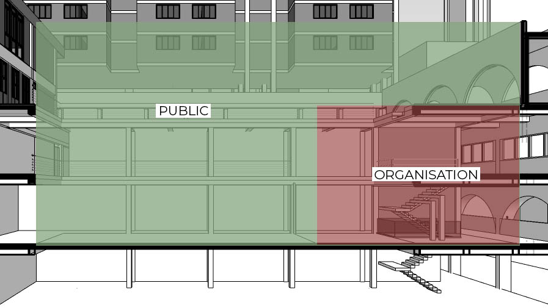
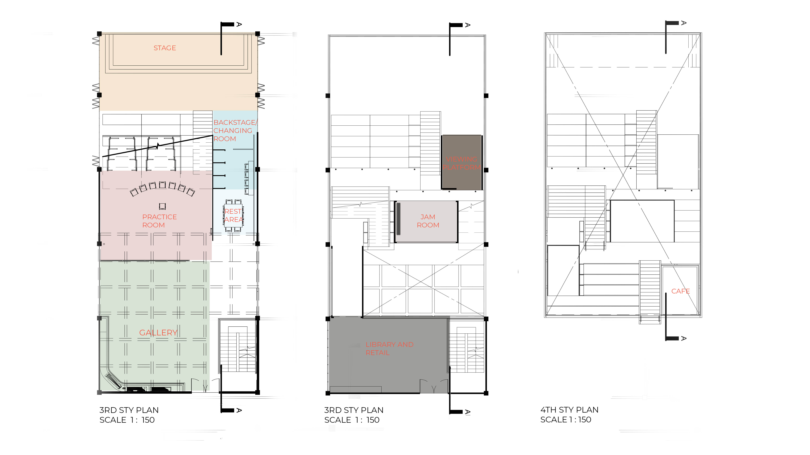
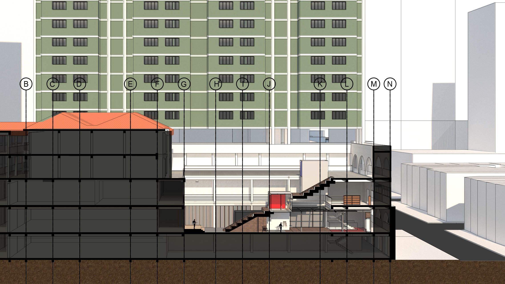
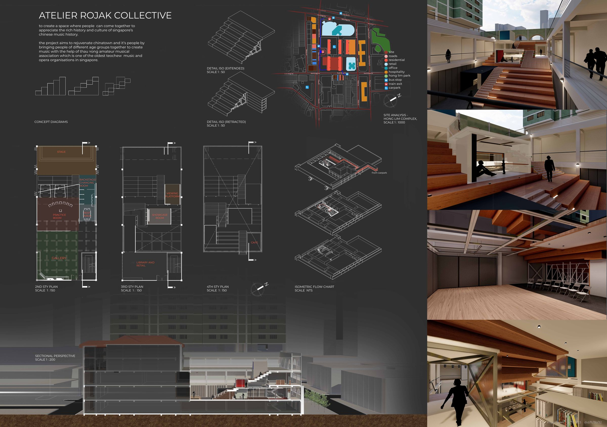

Music Revitalisation
Brief
Located in Singapore, China Square is a relatively old subzone with approximately 1,430 residents, mostly elderly. This project seeks to enliven the area through a multi-functional space that adapts to user needs, reconnecting people young and old through traditional music.
Design Intent
To create a platform that brings Hong Lim Complex and the area around it back to life by reconnecting the people, young and old, through traditional music.

Design Research
Hong Lim Complex, located at Upper Cross Street near Chinatown, was built in 1978 to accommodate 1,000 residents with lower-level amenities. Many shops have since closed, leaving spaces vacant. 56% of the approximately 1,430 residents are over 50 years old — a primarily elderly community.
The core issue: traditional music is less popular among the younger generation because they find it "boring". Several nearby music studios exist, and the TENG Ensemble partners in initiatives fusing Chinese heritage with Singaporean identity.
Site Visit
The void provides airflow and sunlight, but few people pass through. Most shops have been closed long-term. Upper levels house residential apartments, and an elderly recreational centre sits directly behind the site with convenient back-door access. The surrounding neighbourhood is quiet with minimal activity except during hawker meal times.
Organisation
The Thau Yong Amateur Musical Association, established in 1931 and registered in 1962, performs Waijiang and Teochew music and opera. The project aims to revive traditional Chinese music while improving elderly quality of life through stress reduction and memory enhancement.
Thau Yong Amateur Musical Association

Space allocation
Design Concept
The design centres on four principles: connectivity through a main stair-like structure connecting three levels that doubles as stage seating; modular pods that protrude from the main structure for lessons and jamming sessions; transformable retractable steps creating flexible space that can be inverted for interior recital seating; and versatile sliding walls enabling diverse layouts for different activities.
Drawings

Plans

Sectional perspective
Physical Model

Presentation board